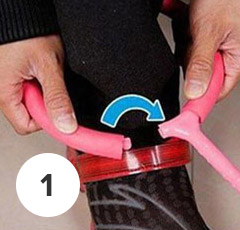
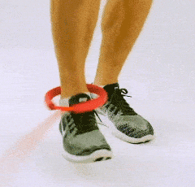
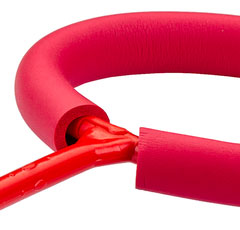
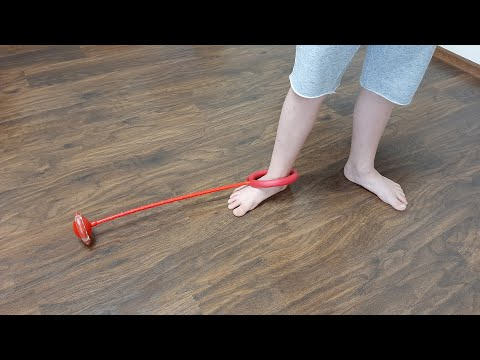
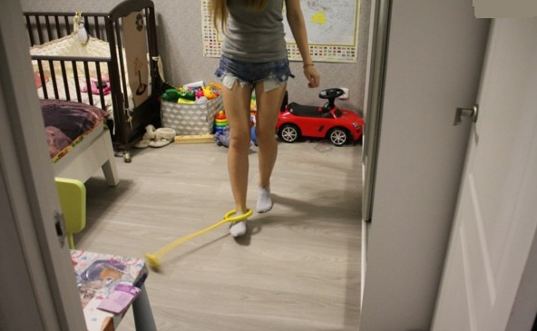
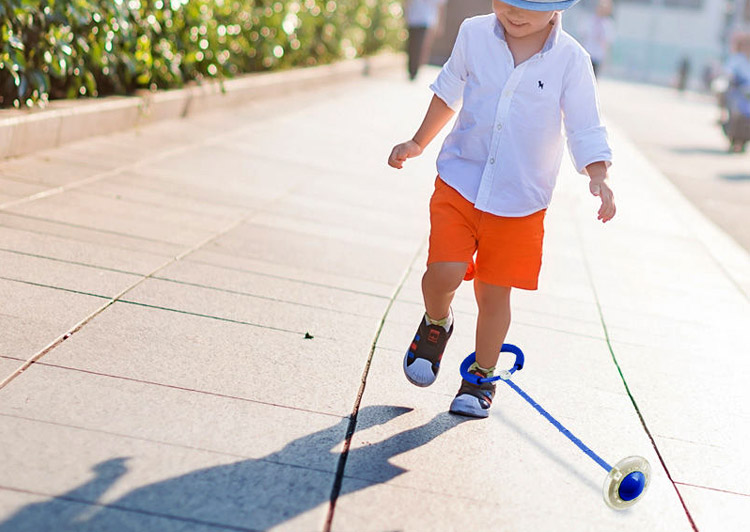

Accesorio fitness
Cuerda de Neuroskipping
súper
descuento -50%
98€
49€
- Promueve la quema de grasa activa
- Fortalece el sistema cardiovascular.
- Te permite entrenar en cualquier lugar
La elección de la cuál ¡No te arrepentirás!
-
Ayuda a adelgazar
La tasa de quema de grasa aumenta de 3 a 4 veces más que con una cuerda normal.
-
 Fortalece los músculos de todo el cuerpo.
Fortalece los músculos de todo el cuerpo.
Tensa y fortalece los músculos para una figura delgada y atractiva.
-
Desarrolla la resistencia física
Fortalece los sistemas cardiovascular y respiratorio, desarrolla la capacidad de salto.
-
 Practicidad y conveniencia
Practicidad y conveniencia
Le permite practicar deportes en un momento y lugar que desee
Reemplaza muchos equipos de fitness
4 veces más efectiva que la cuerda tradicional
La singularidad de la cuerda es que las piernas deben trabajar de diferentes maneras durante el salto, es decir, una pierna debe girar la cuerda y la otra debe saltar sobre ella, debido al trabajo versátil de las piernas, mejoran las conexiones neuronales entre los hemisferios del cerebro.
que esta pasando
mientras salta sobre una cuerda de neuroskipping: ️
- Se practica la habilidad de los movimientos multidireccionales de las piernas.
- El aparato vestibular está entrenado
- Mejora la concentración
- Se desarrolla una gran movilidad corporal
- Perfecciona la destreza, la precisión de los movimientos, el ritmo.
- Interacción entre los hemisferios derecho e izquierdo del cerebro.
¡Muy fácil de usar!
-

Desabrochar
anillo de plástico -

Ponlo en tu tobillo y cierra el broche.
-

Ahora necesitas girar el anillo en una pierna y la otra para saltar sobre el eje.
-

El anillo al ser de espuma suave protege los pies de las rozaduras
Adecuado para personas de todas las edades y tamaños.

- Material: Plástico ABS
- Cant. LEDs: 4 pcs.
- Longitud: 65 cm
- Diámetro de la rueda: 10 cm
- Diámetro del anillo: 16 cm
- Colores: Rojo amarillo
verde azul
Reseñas de nuestros usuarios
Cuerda de Neuroskipping es recomendada por profesionales
Utilizo la cuerda de salto de cuerda en mis nuevos maratones de pérdida de peso. Le ayudará a quemar calorías adicionales a cualquier edad.
También recomendé esta cuerda a mis alumnos durante la cuarentena para entrenar en casa.
-
María Fernández
Puedes saltar la cuerda no solo en la calle, sino también en casa. El rodillo está recubierto de goma, por lo que prácticamente no hay ruido. Se puede utilizar para fitness, muy útil para pantenerse en forma en la cuarentena. Además, saltar la cuerda desarrolla perfectamente el aparato vestibular.
-
Ramón González
¡Saltando con toda la familia! Entrenamiento corporal y cerebral. Debido a la necesidad de realizar diferentes acciones con las piernas, se entrena la interacción interhemisférica, se armoniza el trabajo del cerebro, y también se incrementa la atención y concentración. Esto no es solo un juguete, sino todo un entrenador de cardio que promueve el desarrollo de la coordinación de movimientos, la agilidad y el sentido del ritmo.
Como ordenar Envío y pago
-
 Solicitud
SolicitudDeje una solicitud en nuestro sitio web. El gerente se comunicará con usted en breve para formalizar el pedido.
-
 Entrega
EntregaEnviamos su pedido por mensajería. Paga el pedido al recibirlo.
-
 Garantía
GarantíaTodos nuestros productos han sido probados.
accesorio fitness
Cuerda de Neuroskipping
súper
descuento -50%
98€
49€